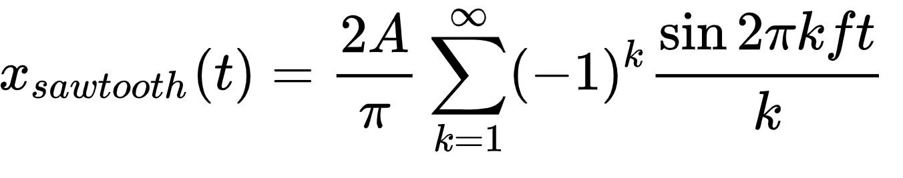
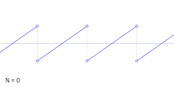

Sawtooth Wave Approximation With Fourier Series
Onda dente de serra
-
Uma onda dente de serra (ou onda serra) é uma espécie de forma de onda não-senoidal básica. Ela recebeu o nome dente de serra baseado em sua semelhança com a lâmina de uma serra. A função descontínua y = x - floor(x) é um exemplo de uma onda dente de serra com período 1. O som desta onda é desarmonioso e limpo, e seu espectro contém ambas as harmônicas normais e estranhas da frequência fundamental. Devido ao fato de ela conter todas as harmônicas inteiras, ela é considerada uma das melhores formas de onda para a construção de outros sons, particularmente cordas, utilizando a síntese subtrativa. Esta onda pode ser construída utilizando a síntese aditiva. A série de Fourier infinita
converge para uma onda dente de serra, onde
é a amplitude da onda e
é a frequência da onda. Na síntese digital, a série é apenas somada, de modo que a maior harmônica, Nmax, é menor que a frequência de Nyquist (metade da frequência de amostra). Esta soma comumente pode ser calculada de forma mais eficiente quando se utiliza a transformada rápida de Fourier. Se a forma de onda é criada digitalmente diretamente no domínio do tempo utilizando uma forma sem limitação de banda, tal como y = x - floor(x), infinitas harmônicas são inseridas no sinal, e o tom resultante contém distorção de aliasing.
-
Disponível emhttp://mathworld.wolfram.comAcesso em 28 de maio de 2020.
Script em Python: Série de Fourier da Onda Dente de Serra:
from pylab import *
from numpy import pi, arange
a = arange (-2*pi, 2*pi, 0.0 1)
b = 2*sin(a)
for n in range (2,1002,1):
b = b - 2.*((-1.)**n/n)*sin(n*a)
subplot (231)
plot (a,b, 'b-')
ylabel ('f(x)')
grid (False)
title ('(a)')
x = arange (-2*pi, 2*pi, 0.01)
y = -2*(-1)*sin(x)
for n in range (2,2,1):
y = y - 2.*((-1.)**n/n)*sin(n*x)
subplot (232)
plot (a,b,'b-')
plot (x, y, 'r-')
title ('n=1 (b)')
x = arange (-2*pi, 2*pi, 0.01)
y = -2*(-1)*sin(x)
for n in range (2,6,1):
y = y - 2.*((-1.)**n/n)*sin(n*x)
subplot (233)
plot (x, y, 'r-')
plot (a,b, 'b-')
title ('n=5 (c)')
x = arange (-2*pi, 2*pi, 0.01)
y = -2*(-1)*sin(x)
for n in range (2,32,1):
y = y - 2.*((-1.)**n/n)*sin(n*x)
subplot (234)
plot (a,b, 'b-')
plot (x, y, 'r-')
title ('n=31 (d)')
ylabel ('f(x)')
x = arange (-2*pi, 2*pi, 0.01)
y = -2*(-1)*sin(x)
for n in range (2,62,1):
y = y - 2.*((-1.)**n/n)*sin(n*x)
subplot (235)
plot (x, y, 'r-')
plot (a,b,'b-')
title ('n=61 (e)')
xlabel ('x')
x = arange (-2*pi, 2*pi, 0.01)
y = -2*(-1)*sin(x)
for n in range (2,1002,1):
y = y - 2.*((-1.)**n/n)*sin(n*x)
subplot (236)
plot (x, y, 'r-')
plot (a,b, 'b-')
title ('n=1001 (f)')
show ()
Simulação: Onda dente de Serra
A ideia dessa visualização não é minha. Contudo demonstra bem o princípio fundamental de qualquer série de Fourier. Você pode aproximar qualquer forma de onda adicionando funções sinusais, representadas aqui por círculos. Este é o original GIF